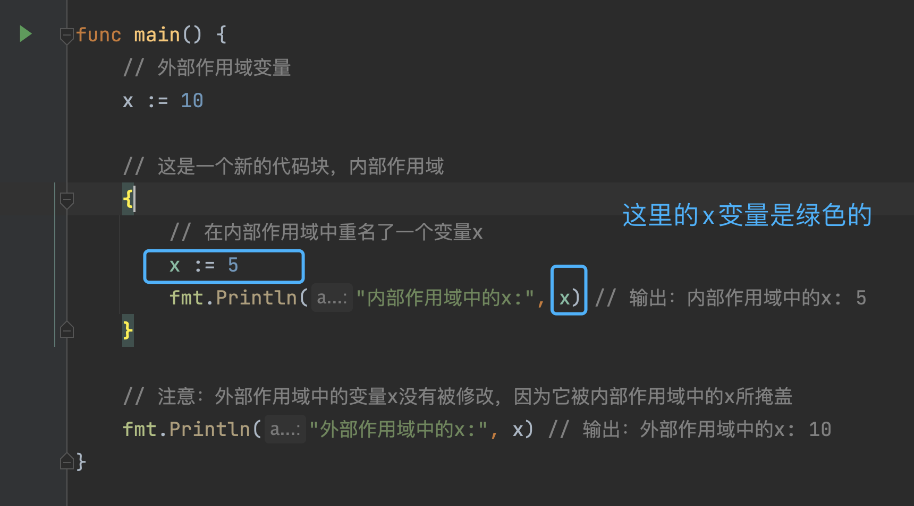

1 变量阴影 #
package main
import "fmt"
func main() {
// 外部作用域变量
x := 10
// 这是一个新的代码块，内部作用域
{
// 在内部作用域中重名了一个变量x
x := 5
fmt.Println("内部作用域中的x:", x) // 输出：内部作用域中的x: 5
}
// 注意：外部作用域中的变量x没有被修改，因为它被内部作用域中的x所掩盖
fmt.Println("外部作用域中的x:", x) // 输出：外部作用域中的x: 10
}
运行之后output:
内部作用域中的x: 5
外部作用域中的x: 10
解决办法IDE GoLand 能识别这个风险,新作用域内的x变量会变成绿色字体. 
用一个临时变量tmpX来过渡,防止2个地方的x变量指向的混淆.
x:=10
{
tmpX:=5
x=tmpX
}
要么不用:=
var x int
x=10
{
x=5
}
2 代码嵌套 #
涉及卫语句概念.
改成如下精简的:
if （it ！= 活的）{return 不喜欢}
if（it！=人）{return 不喜欢}
if（it！=女人）{return 不喜欢}
if（it == 女人 && it == 活的） {return 喜欢}
if（其他任何情况）{return 不喜欢}
3 init函数使用场景 #
init与其他函数执行顺序
package main
import "fmt"
var va = func() int {
fmt.Println("var")
return 1
}()
func init() {
fmt.Println("init")
}
func main() {
fmt.Println("main")
}
output:
var
init
main
多个包的init函数执行顺序
func main(){
redis.xx
}
先载入redis的init,然后是main的init.
import多个包的顺序
import多个包时,根据文件字母顺序载入init,比如b.go,a.go.
先执行a.go的init.
多次定义init函数
init函数可以多处定义.
func init() {
fmt.Println("init")
}
func init() {
fmt.Println("init2")
}
先执行第一个init.
初始化其他包的init
import (
_ "foo"
)
上面例子中foo包的init被执行了.
init函数无法被其他函数调用
使用场景
反例:
数据库连接例子写在init函数里可能是不合适的.
// 伪代码
var db *DB
fun init(){
db，err=xx()
if err!=nil{
painc
}
}
- init函数没有返回值,只能panic去中断,而数据库返回的error,只能暴力处理
- 考虑到单元测试场景,init是首次被加载的,包里的函数不是每个测试时都需要数据库连接这个依赖项
- 使得变量全局化了,过于暴露了数据库这个变量
正例
func init(){
http.HandleFunc("/blog/", redirect)
}
- error的handle还是正常的
- 单元测试没有变复杂
4 设置变量值复杂化 #
通过函数设置变量
func setAge(){ //setter
}
func Age(){ // getter
}
优点
- 统一管理
- 可以在函数内部对变量作出规则限制
- 很方便植入断点
若前期需求简单,不要过度设计.
5 interface污染 #
接口越大,抽象越弱.
定义接口规则
- 共同行为
- 解耦合
- 约束行为
不要去设计接口,而是发现他们.
接口有CPU消耗成本.
6 interface定义处 #
接口的定义尽量在消费端,而不是在生产端.
7 interface使用规则 #
函数返回对象尽量不要用interface,否则别人使用时,需要去看你的代码.
函数入参可以接受interface,宽进严出.
8 any类型使用 #
any使得静态语言变得和动态语言一样,不确定里面的信息.
除非在json encode和decode场景这种,尽量减少用any,因为他代表着信息表征减少.
9 泛型使用 #
场景
- slice里面的元素合并
10 struct内嵌类型 #
type a struct {
sync.Mutex
}
func useA() {
a1 := new(a)
a1.Lock()
}
a1.Lock 对于使用者过于迷惑.
type a struct {
mu sync.Mutex
}
func useA() {
a1 := new(a)
a1.mu.Lock()
}
a1.mu.Lock 对于使用者不会感到迷惑.
11 设计模式:func option #
functional options pattern golang
func WithPort(port int) Option {
return func(s *Server) {
s.port = port
}
}
func WithTimeout(timeout time.Duration) Option {
return func(s *Server) {
s.timeout = timeout
}
}
12 项目布局 #
go标准布局
https://github.com/golang-standards/project-layout
13 package名定义 #
减少这种common utils base包名的定义.
14 package名冲突 #
使用别名解决.
15 代码文档 #
提及代码文档重要性,推荐go官方的go doc工具.
16 静态代码检测 #
介绍集成的linter的项目https://github.com/golangci/golangci-lint